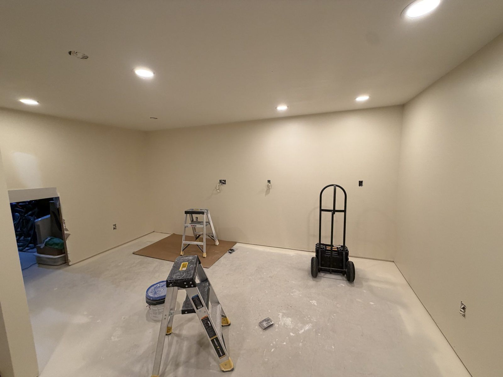

Framing & insulation
Walls framed and insulated against the foundation the right way. Harrison Township's checklist calls for pressure-treated bottom plates and fire-blocking.
The permits, egress and inspection rules we've looked up for the townships we work in, plus what goes into a basement that passes.
Updated November 16, 2026
A finished basement is only as good as what's behind the walls. Bottom plates, fire-blocking and insulation are on the checklist in towns like Harrison, and once the drywall is up they're all out of sight. We frame and insulate against the foundation properly, plan the lighting and outlets before the drywall goes up, and make sure any bedroom has a legal way out.
In almost every town we serve, finishing a basement needs a permit. What changes from town to town is the paperwork: zoning first or not, who draws the plans, and which separate trade permits apply. Below are the rules we've looked up, sorted by state. If your town isn't listed, call us and we'll check it for you.
We're licensed in all three states: PA HIC #PA201433, DE #2026700487 and NJ HIC #13VH14325000. Family-run, over 50 years in the trade, and fully insured.
Walls framed and insulated against the foundation the right way. Harrison Township's checklist calls for pressure-treated bottom plates and fire-blocking.
Lighting and outlets planned before the drywall goes up, with the electrical and HVAC lined up. Harrison's checklist covers outlet spacing.
Smoke alarms are on Harrison Township's basement checklist. We build to every item.
Any bedroom needs a legal way out: a code-sized egress window or door. In Harrison that means at least 5 sq ft of opening with the sill no higher than 44 in.
A basement bathroom often needs an ejector pump. On septic homes in South Jersey, it goes through the county health department.
Drywall or drop ceilings, interior doors, casing and baseboard to match the rest of the house.


Easttown specifically requires a building permit to finish a basement.
Permits are required for most work.
Contractors must be licensed with the Township and carry workers' comp naming the Township. We're set up.
Kitchens, baths and basements need separate building, plumbing, electrical and mechanical permits. We coordinate all of them.
The building permit covers alterations. Electrical, plumbing and HVAC permits are separate, and we pull each one.
Residential review takes up to 15 business days.
Applications need two sets of plans, a signed contract, and insurance with a PA HIC number. We have them ready.
Don't confuse it with Newtown Township in Bucks County; its rules are different.
Sealed plans are required for structural changes.
Permits take about 1–10 days, and fees double if work starts before the permit is issued. We never start early.


The Township's own permit guides call finished basements 'a popular home improvement project.'
Finishing a basement requires zoning approval plus construction permits with plans.
Plans come from an NJ licensed design professional where required. We coordinate them.
Finishing a basement takes a construction permit and a build that meets the Township's basement checklist: pressure-treated bottom plates, fire-blocking, smoke alarms, outlet spacing, and a proper egress window for any bedroom.
Bedroom egress windows need at least 5 sq ft of opening, with the sill no higher than 44 in.
Grinder/ejector pumps must be cleared with the Gloucester County Health Dept., since many lots are on septic.
A final inspection happens before your final payment.
For basements, siding, decks and additions, the first step is a call to the Construction Office.
UCC permits are required for renovations, and Medford requires HIC registration with every residential permit. Ours is 13VH14325000.
New Jersey home improvement contractors can't prepare construction plans. Where plans are required, we work with an NJ design professional.
On septic homes in South Jersey, an ejector pump for a basement bathroom goes through the county health department.
New Castle County lists finished basements under Residential Addition/Renovation permits.
Greenville, Centreville and Hockessin are unincorporated, so the County issues permits through eApply/ePlans.
Pulled, scheduled and closed out properly. Every basement we finish gets permitted and inspected.
Where your town requires plans, we prepare them or coordinate an NJ licensed design professional.
We coordinate licensed trades and the electrical, plumbing and mechanical permits your town requires.
We schedule the inspections and build to every item on the checklist.
Code-sized escape windows and wells for basement bedrooms.
A permitted, inspected basement matters when you go to sell the house.
In almost every town we serve, yes. Easttown Township requires a building permit, Moorestown requires zoning approval plus construction permits with plans, Harrison Township requires a construction permit, and New Castle County, DE lists finished basements under Residential Addition/Renovation permits. We pull the permit and schedule the inspections.
The Township's basement checklist covers pressure-treated bottom plates, fire-blocking, smoke alarms, outlet spacing, and a proper egress window for any bedroom. We build to every item.
Yes, with a code-sized egress window or door. In Harrison Township that means at least 5 sq ft of opening with the sill no higher than 44 inches.
New Jersey home improvement contractors can't prepare construction plans, so where plans are required we work with an NJ licensed design professional. Moorestown requires plans to finish a basement.
Yes, often with an ejector pump. On septic homes in South Jersey that goes through the county health department. In Harrison Township, grinder/ejector pumps must be cleared with the Gloucester County Health Dept., since many lots are on septic.
Swarthmore requires separate building, plumbing, electrical and mechanical permits. We coordinate all of them.
New Castle County lists finished basements under Residential Addition/Renovation permits. In unincorporated areas like Greenville, Centreville and Hockessin, the County issues permits through eApply/ePlans.
In Edgmont Township, permit fees double if work starts before the permit is issued. We never start early.
Rules change, so confirm with your township before you start, or have us check it for you. Call (215) 980‑0195. You can also see our work on the basement finishing page.
Tell us the project. We come out, listen, and hand you an honest written price.